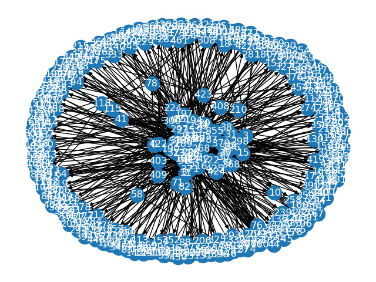

Crawling link
Web Structure Mining¶
Web Structure Mining merupakan salah satu implementasi dari Data Mining. Berbeda dengan Web Content Mining yang berfokus pada isi/konten dari suatu website, Web Structure Mining berfokus pada struktur link pada hypertext antar-dokumen.
Secara sederhana, kegiatan Structure Mining merupakan proses mengambil pola hubungan suatu website dengan website lain. Media sosial seperti Facebook, misalnya. Pengguna facebook memiliki hubungan "pertemanan" dengan pengguna facebook lain. Jika digambarkan, pola hubungan tersebut akan membentuk sebuah Graph yang sangat besar.
Umumnya, Web Structure Mining berfungsi untuk menemukan hubungan antara suatu webpage dengan webpage lain. Hubungan tersebut dapat menentukan apakah kedua webpage tersebut memiliki kemiripan, baik secara struktur maupun konten. Keduanya mungkin saja berada di satu web server yang dibuat oleh satu orang yang sama.
Tujuan¶
Salah satu tujuan dari web structure mining adalah mengkategorikan website menurut rangkuman struktur link yang telah didapat berdasarkan kemiripan dan seberapa banyak website itu diakses oleh website yang lain.
Tools dan Library yang digunakan
Python 3.6- Library untuk Crawling :
BeautifulSoup4,requests - Library untuk Preprocessing Text :
Sastrawi - Library untuk Menampung dan Menghitung Pagerank :
pa,networkx - Library untuk Menampilkan Graph :
matplotlib - Website target : "https://thoughtcatalog.com/category/creepy/"
Code 1
def getAllLinks(src):
try:
page = requests.get(src)# Mengubah html ke object beautiful soup
soup = BeautifulSoup(page.content, 'html.parser')
# GET all tag <a>
tags = soup.findAll("a")
links = []
for tag in tags:
# Pencegahan eror apabila link tidak memiliki href
try:
# Get all link
link = tag['href']
if not link in links and 'http' in link:
links.append(link)
except KeyError:
pass
return links
except:
#print("Error 404 : Page "+src+" not found")
return list()
code diatas berfungsi untuk mendapatkan semua link pada sebuah website. Yang pertama, kita mendapatkan semua tag a dengan method .findAll("a"). Lalu kita bisa menggunakan tag["href"] untuk mendapatkan link.
Code 2
def crawl(url, max_deep, show=False, deep=0, done=[]):
#returnnya ada di edgelist
global edgelist
# menambah counter kedalaman
deep += 1
# menyamakan format url, agar tidak ada url yg dobel
url = simplifiedURL(url)
#menampilkan proses
if not url in done:
# crawl semua link
links = getAllLinks(url)
done.append(url)
if show:
if deep == 1:
print(url)
else:
print("|", end="")
for i in range(deep-1): print("--", end="")
print("(%d)%s" %(len(links),url))
for link in links:
# Membentuk format jalan (edge => (dari, ke))
link = simplifiedURL(link)
edge = (url,link)
# Mengecek jalan, apabila belum dicatat, maka dimasukkan ke list
if not edge in edgelist:
edgelist.append(edge)
# Cek kedalaman, jika belum sampai terakhir, maka crawling.
if (deep != max_deep):
crawl(link, max_deep, show, deep, done)
Kedua fungsi diatas akan digabungkan dengan memanggilnya di dalam fungsi crawl. Dimana fungsi ini nantinya akan dipanggil lagi pada main program.
root = ""https://thoughtcatalog.com/category/creepy/""
edgelist = []
nodelist = [root]
crawl(root, 3, show=True)
edgeListFrame = pd.DataFrame(edgelist, None, ("From", "To"))
Graph
g = nx.from_pandas_edgelist(edgeListFrame, "From", "To", None, nx.DiGraph())
pos = nx.spring_layout(g)
nx.draw(g, pos)
nx.draw_networkx_labels(g, pos, label, font_color="w")
plt.axis("off")
plt.show()
